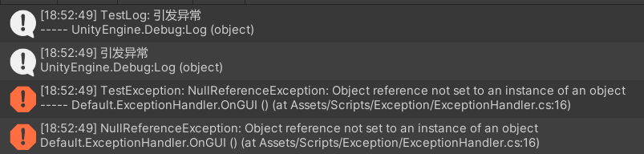

# Unity 异常处理
在 Unity 中，当程序发生异常时，整个程序不会立即中断，因为 Unity 使用了异常处理机制来捕获和处理异常（Unity 全局异常处理）。正是因为这种异常处理的机制，在编写 Unity 脚本的时候很少会用到 try-catch 代码块。
当程序发生异常时，会抛出一个异常对象。然后，程序会查找能够处理该异常的代码块，如果找到了适合的异常处理器，就会执行相应的处理代码，而不是立即终止程序的执行。这样可以防止程序因为遇到异常而立即崩溃，给开发人员提供了处理异常的机会。开发人员通过使用这些异常处理器，可以记录异常、显示错误信息等。
需要注意的是，在某些极端情况下，如果异常没有被适当地处理，或者异常处理器本身发生错误，可能会导致程序最终崩溃或无响应。因此，在开发过程中，仍然需要及时发现和解决异常问题，以确保程序的稳定性。
# 异常处理器
- Unity 提供了一种全局异常处理器来捕获和处理运行时发生的异常。这个全局异常处理器是一个可以自定义的脚本，用于在异常发生时执行特定的逻辑。
- 通过 UnityEngine.Application.logMessageReceived 事件来获取信息
| 订阅事件所需要的参数 | 描述 |
|---|---|
| string logString | 日志消息内容 |
| string stackTrace | 触发事件的位置（堆栈跟踪） |
| LogType type | 日志消息类型 |
| 日志消息类型 | 描述 |
|---|---|
| Error | 用于错误的 LogType。 |
| Assert | 用于断言的 LogType。（这些也可以指示 Unity 本身中的错误。） |
| Warning | 用于警告的 LogType。 |
| Log | 用于常规日志消息的 LogType。 |
| Exception | 用于异常的 LogType。 |
示例代码
using UnityEngine; | |
namespace Default | |
{ | |
/// <summary> | |
/// 异常处理器 | |
/// </summary> | |
public class ExceptionHandler : MonoBehaviour | |
{ | |
private void OnGUI() | |
{ | |
if (GUILayout.Button("引发异常")) | |
{ | |
string a = null; | |
Debug.Log("引发异常"); | |
Debug.Log(a[0]); | |
} | |
} | |
private void OnEnable() | |
{ | |
Application.logMessageReceived += HandleLog; | |
} | |
private void OnDisable() | |
{ | |
Application.logMessageReceived -= HandleLog; | |
} | |
private void HandleLog(string logString, string stackTrace, LogType type) | |
{ | |
if (type == LogType.Log) | |
{ | |
Debug.LogFormat("TestLog: {0} \n----- {1}", logString, stackTrace); | |
} | |
else if (type == LogType.Exception) | |
{ | |
Debug.LogErrorFormat("TestException: {0} \n----- {1}", logString, stackTrace); | |
} | |
} | |
} | |
} |
点击 “引发异常” 按钮后，出现以下内容：